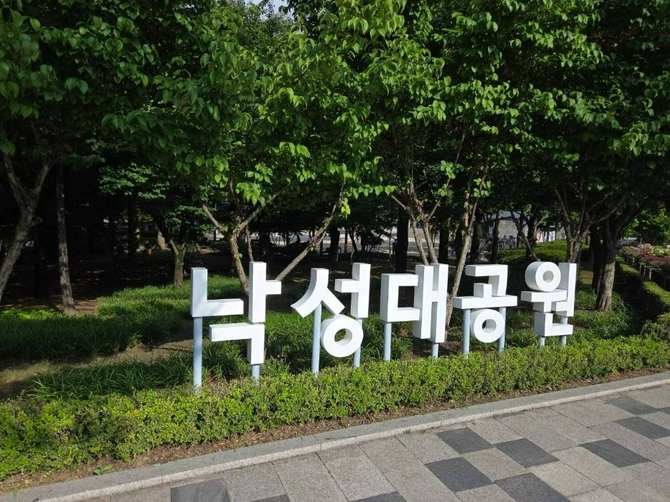
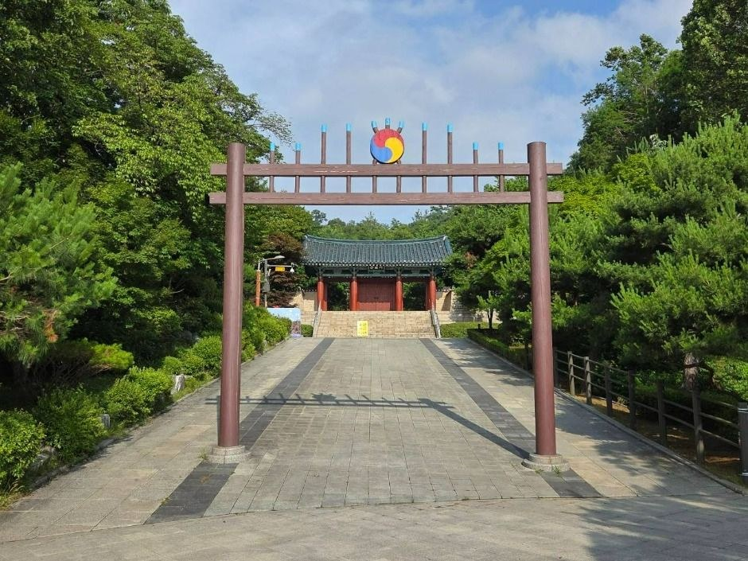
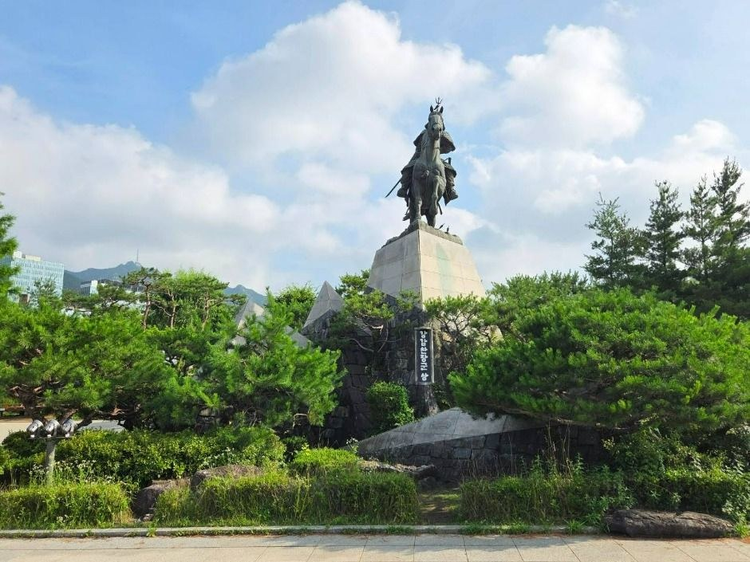
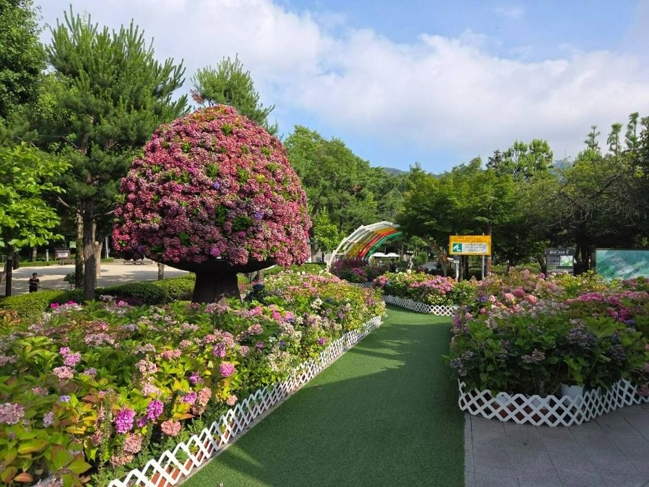
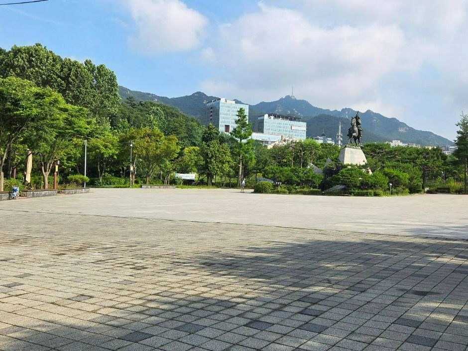

Nakseongdae Park & Gwanak Gang Gam-chan Festival Guide: Overview
This Nakseongdae Park guide covers a quiet, free park in Gwanak-gu, southern Seoul, and the Gwanak Gang Gam-chan Festival that fills it every October. Nakseongdae is the birthplace of General Gang Gam-chan, one of Korea's most celebrated national heroes, and the park was laid out in 1973 to honour him.
For visitors, it is an easy half-day trip: a Goryeo-style shrine, a striking bronze statue of the general on horseback, flower gardens and about 3 km of forest paths at the foot of Gwanaksan, just a short walk from Line 2. In festival week the same lawns turn into concert stages and a food market.

The Legend of the Falling Star
According to Korea Tourism Organization (KTO) records, the name Nakseongdae (낙성대) comes from the legend that a great star fell to earth on the night Gang Gam-chan (948–1031) was born. He later led Goryeo's army to a decisive victory over the Khitan at Gwiju in 1019.
Inside the park, Anguksa (안국사) shrine holds his portrait. Its design follows Muryangsujeon Hall at Buseoksa Temple, a classic example of Goryeo wooden architecture, with an octagonal blue-tiled roof. In front stands the Nakseongdae three-storey stone pagoda, moved here from the general's birthplace, along with a memorial stele.


Walking the Park
The park is wooded and green through most of the year. KTO lists birch, pine, oak, aspen and fir groves along about 3 km of walking paths, plus a pond, an outdoor play yard and flower gardens. In spring and early summer the beds near the entrance bloom; in autumn the forest turns red and gold.
The bronze equestrian statue of General Gang Gam-chan stands on a hill above the main plaza, with Gwanaksan in the background — the most photographed spot in the park. The park also sits near the back gate route to Seoul National University, so you will share the paths with students and local walkers.


The Gwanak Gang Gam-chan Festival (10th Edition, October 16–18, 2026)
Gwanak-gu combined two older events — the Gwanaksan azalea festival and the Inheonje memorial rite — into the Gwanak Gang Gam-chan Festival in 2016. The 2026 edition marked its 10th anniversary under the theme "Tomorrow Gang Gam-chan – Opening the Future", and for the first time spread into the new Nakseong Flower Garden (낙성 꽃뜰정원). Yonhap reports that about 208,000 people attended in 2025.
- Fri, Oct 16: memorial rite at Anguksa (10:00), a calligraphy contest, and the free Youth Dream Concert at 19:00 with university hip-hop crews, rapper SINCE and Dynamic Duo.
- Sat, Oct 17: a talk show with history lecturer Seol Min-seok (13:00), a golden-bell quiz show, children's activities, and the 10th-anniversary show "Gang Gam-chan, From the Stars" with an aerial fire performance at 19:30.
- Sun, Oct 18: the Citizens' Pungnyu contest and a community arts festival.
- All weekend: the Goryeo Market (local restaurants and bakeries), Byeokrando 21 trade-port experience, a strategy playground for kids, traditional archery and a 10-year archive exhibition.
Visitor Information
| Item | Details |
|---|---|
| Place | Nakseongdae Park (낙성대공원), 77 Nakseongdae-ro, Gwanak-gu, Seoul |
| Hours | Open at all times; no closing day (KTO) |
| Admission | Free |
| Park office | +82-2-879-6524 |
| Parking | Available (limited; public transport recommended) |
| Subway | Line 2 Nakseongdae Station, Exit 4, about 10 min walk |
| Festival | Gwanak Gang Gam-chan Festival, annual in mid-October; 2026: Oct 16–18 |
| 2026 festival hours | Sat–Sun daytime 12:00–19:00, evening 19:00–21:00 |
| Festival enquiries | Gwanak-gu / Gwanak Cultural Foundation, +82-2-828-5766 |
Sources: Korea Tourism Organization data for Nakseongdae Park, the Seoul Metropolitan Government festival portal (Fun Seoul), the Gwanak Cultural Foundation and Yonhap News (October 12, 2026). Photos © Korea Tourism Organization (KOGL Type 3, attribution, unmodified). No AI-generated images. Festival dates and programmes change every year — confirm before you go.
Getting There
Take Seoul Subway Line 2 to Nakseongdae Station and leave by Exit 4; the park entrance is about a 10-minute walk uphill along Nakseongdae-ro. Several local and Gwanak village buses stop at Nakseongdae Entrance (낙성대입구), about five minutes away. From Gangnam Station the subway ride is around 10 minutes. Parking is limited and very busy during festival week.
Tips for Visiting
- Combine with Gwanaksan: trails toward Gwanaksan start nearby — wear proper shoes if you plan to continue uphill.
- Best seasons: late October to early November for autumn leaves; spring for the flower beds.
- Be respectful at Anguksa: it is a memorial shrine, so keep voices low inside the gates.
- Festival evenings: arrive early for headline concerts and bring a layer — October nights drop to around 10°C.
- Eat nearby: the streets around Nakseongdae and Seoul National University stations have inexpensive student restaurants and cafés.
How It Compares with Other Seoul History Parks
| Nakseongdae Park | Olympic Park (Hanseong Baekje) | Amsa-dong Prehistoric Site | |
|---|---|---|---|
| Area | Gwanak-gu, southern Seoul | Songpa-gu, south-east Seoul | Gangdong-gu, east Seoul |
| History | Goryeo general Gang Gam-chan | Baekje capital earthworks | Neolithic village |
| Cost | Free | Free | Small fee |
| Best for | Short forest walk + shrine | Big lawns, festivals | Families, museum |
Who It Suits
- Great for: History fans who want a local hero's shrine without tourist crowds.
- Great for: Visitors staying in Gangnam, Sillim or near Seoul National University who want an easy green escape.
- Great for: Families in October, when the festival adds free shows and kids' activities.
- Less ideal: Travellers looking for big palaces or shopping — it is a quiet neighbourhood park.
Plan Your Seoul Trip
Nakseongdae Park FAQ
Where is Nakseongdae Park and how do I get there?
Nakseongdae Park is at 77 Nakseongdae-ro, Gwanak-gu, Seoul. Take Subway Line 2 to Nakseongdae Station, use Exit 4 and walk about 10 minutes, or take a local bus to the Nakseongdae Entrance stop, about 5 minutes away. Search 낙성대공원 in Naver Map or Kakao Map.
Is Nakseongdae Park free and when is it open?
Yes. According to Korea Tourism Organization data, the park is open at all times with no closing day and no admission fee. The park management office number is +82-2-879-6524.
Who was General Gang Gam-chan?
Gang Gam-chan (948–1031) was a Goryeo-dynasty statesman and general best known for the victory at Gwiju in 1019 against the Khitan Liao army. Legend says a great star fell where he was born — the name Nakseongdae means 'the place where the star fell'.
When is the Gwanak Gang Gam-chan Festival held?
It is an annual autumn history festival run by Gwanak-gu in Nakseongdae Park, usually in mid-October. The 10th edition took place from October 16 to 18, 2026, with free concerts, a talk show, a Goryeo food market and family activities. Check the Gwanak Cultural Foundation or Seoul festival portal for next year's dates.
What is there to see in the park outside festival dates?
Anguksa shrine with General Gang's portrait and its Goryeo-style octagonal blue-tiled roof, the three-storey stone pagoda moved from his birthplace, his equestrian statue, flower gardens, and about 3 km of walking paths through birch, pine, oak and fir woods that turn colourful in autumn.